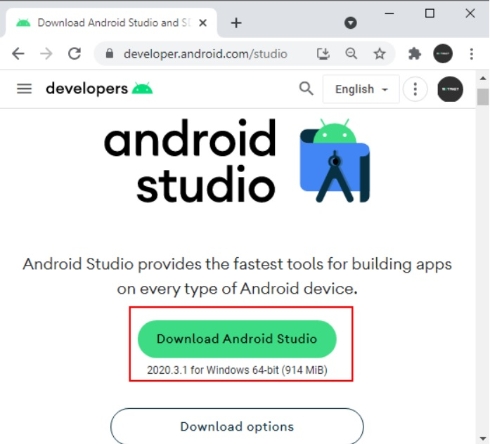

Немного истории..
Бурное развитие информационных технологий в последнее время привело к тому, что появилось много новых устройств и технологий, таких, как планшеты, смартфоны, нетбуки, другие гаджеты. Они все более прочно входят в нашу жизнь и становятся привычным делом. Лидирующей платформой среди подобных гаджетов на сегодняшний день является ОС Андроид.
Android используется на самых разных устройствах. Это и смартфоны, и планшеты, и телевизоры, и смарт-часы и ряд других гаджетов. По разным подсчетам за 2020 год этой операционой системой пользуются около 85% владельцев смартфонов, а общее количество пользователей сматрфонов на ОС Android оценивается в более чем 2,5 млрд. человек по всему миру.
ОС Андроид была создана разработчиком Энди Рубином (Andy Rubin) в качестве операционной системы для мобильных телефонов и поначалу развивалась в рамках компании Android Inc. Но в 2005 году Google покупает Android Inc. и начинает развивать операционную систему с новой силой. Android постоянно эволюционирует, и вместе с операционной системой эволюционируют средства и инструменты для разработки. На данный момент (октябрь 2023 года) последней версией является Android 14.0, которая вышла в октябре 2023 года:
Что нужно для разработки?
Стоит отметить, что разрабатывать приложения под Android можно с помощью различных фреймворков и языков программирования. Так, в качестве языков программирования могут применяться Java, Kotlin, Dart (фреймворк Flutter), C++, Python, C# (платформа Xamarin) и т.д. В данном руководстве мы будем использовать язык Kotlin. Поэтому прежде чем приступать к освоению программирования под Android по данному руководству, необходимо освоить хотя бы базовые пародигмы програмирования.
Установка средств разработки
Существуют разные среды разработки для Android. Рекомендуемой средой разработки является Android Studio, которая создана специально для разработки под ОС Android. Поэтому мы ее и будем использовать. Загрузить файл установщика можно с официального сайта: https://developer.android.com/studio:
Кроме самой среды Android Studio для разработки также потребуется набор инструментов, который называется Android SDK. Например, если ранее Android SDK еще не было установлено, то при первом обращении к Android Studio она предложит установить ряд дополнительных инструментов, которые необходимы для разработки. Прежде всего это Android SDK и ряд дополнительных компонентов:
Нажмем на кнопку Finish, чтобы, наконец, все это установить.
И после завершения установки нажмем на кнопку Finish. И мы можем приступать к созданию приложен